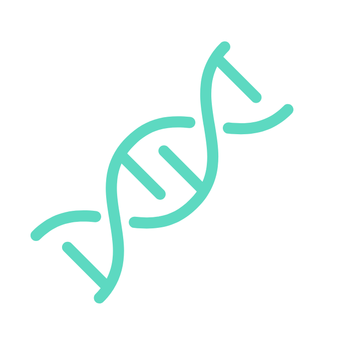

Whether this is your first visit or one of many, welcome.
If you are living with a neuromuscular disease or caring for someone who is, welcome.
If you are advancing care as a physician or clinician, or supporting this mission as a partner, funder, or friend, welcome.
You belong here.
Since 1950, MDA has led the field in research, care, and advocacy for people living with neuromuscular diseases. We've delivered real progress: research that supports more accurate diagnoses, stronger care models, and therapies that were unthinkable a generation ago. We continue to work together to elevate the voices of our community, driving regulatory and legislative policies that recognize the agency and dignity of people living with neuromuscular disease. Lastly, we have we created a community where people of all ages and any diagnosis can find connection, education, and resources.
As a neuroscientist and as MDA's interim President and CEO, I see the path ahead clearly: full of urgency, grounded in evidence, and driven by people like you. Thank you for being here.
Let's keep going - together.
Mission Statement
The Muscular Dystrophy Association's mission is to empower the people we serve to live longer, more independent lives.
Muscular Dystrophy Association (MDA) is the #1 voluntary health organization in the United States for people living with muscular dystrophy, ALS, and related neuromuscular diseases. For 75 years, MDA has led the way in accelerating research, advancing care, and advocating for the support of our families. MDA's mission is to empower the people we serve to live longer, more independent lives.

Accelerating Scientific Discovery and Breakthroughs
Transforming research into real world treatment and therapies.
Access to Comprehensive Care and Resources
Redefining what it means to live with neuromuscular disease.